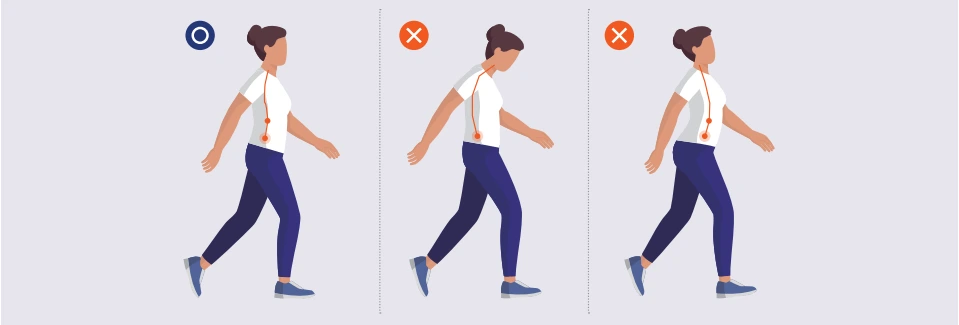
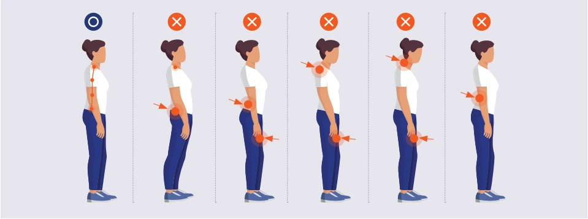
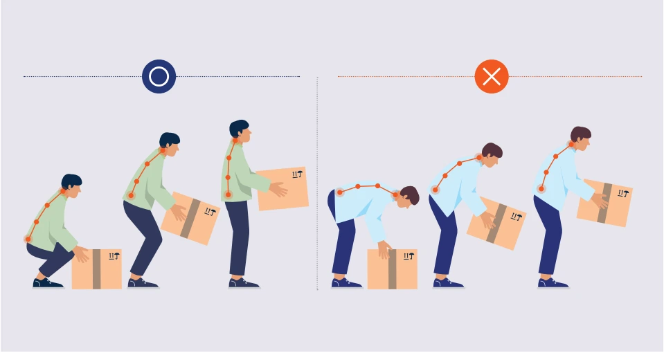
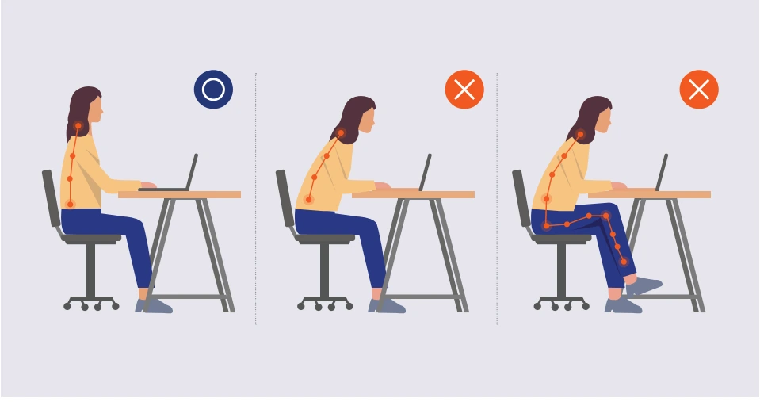
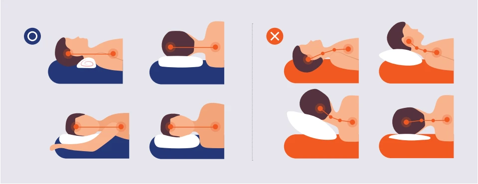
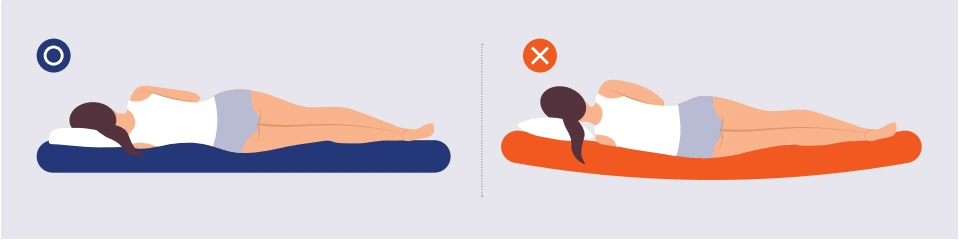
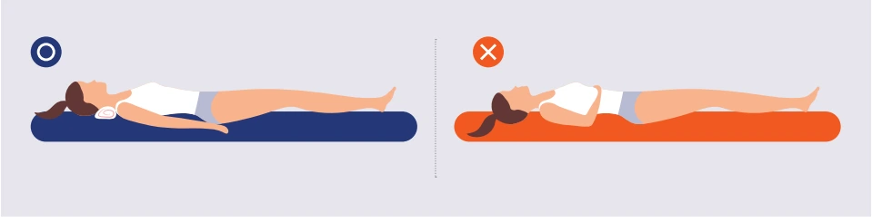

걷기

허리를 곧게 펴고 시선은 정면을 향하며 팔을 가볍게 흔듭니다. 뒤꿈치가 먼저 땅에 닿게 하고 발바닥으로 땅을 치듯 전진하는 느낌으로 걷습니다.
서 있기·휴대폰 보기

복숭아뼈, 무릎 옆 튀어나온 뼈, 골반, 팔꿈치 뼈, 어깨 뼈와 머리가 일직선이 되도록 합니다. 휴대폰을 볼 때는 고개를 숙이지 말고 손으로 들어 올립니다.
무거운 짐 들기

허리를 숙이지 않고 무릎을 굽힙니다. 허리를 세운 상태에서 허벅지 힘을 이용해 들어 올립니다. 부피가 큰 짐은 한 번보다 여러 번 나누어 옮깁니다.
앉아서 일하기

상체를 똑바로 세우고 등과 허리를 의자에 밀착합니다. 의자를 책상 가까이 당기고 책상·의자 높이를 조절해 모니터를 눈높이에 최대한 맞춥니다.
베개 베기

목이 자연스러운 C커브를 유지하고 목 근육이 긴장하지 않는 높이를 선택합니다. 너무 낮거나 높은 베개는 목에 무리를 줄 수 있습니다.
옆으로 눕기

목뼈와 허리뼈가 최대한 일직선을 유지하도록 합니다. 베개 높이는 10~15cm가 적당하며 무릎 사이에 베개를 끼우면 척추 부담을 줄일 수 있습니다.
바로 눕기

천장을 보고 누웠을 때 머리와 목의 높이는 바닥에서 6~8cm 정도로 합니다. 다리를 쭉 폈을 때 통증이나 다리 저림이 있다면 무릎 밑에 베개를 넣는 방법이 있습니다.